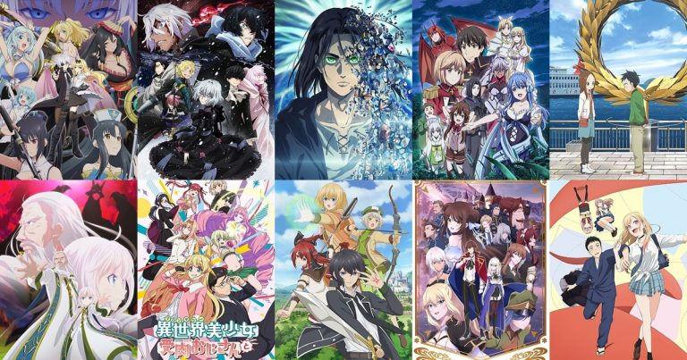

อนิเมะมาใหม่
หลัง ๆ มานี้เราเสพย์ความญี่ปุ่นเยอะมากทุกคนและค้นพบว่าอนิเมะใหม่ ๆ ของญี่ปุ่นคืองานดีมาก ไม่ได้เป็นแค่อนิเมะน่าดูเท่านั้นแต่ว่ายังชวนทำงานกับความคิดของเราในบางเรื่องด้วย วันนี้ Wongnai Beauty ได้คัดอนิเมะใหม่มาฝากเพื่อน ๆ แล้วค่ะ ใครอยากหาอะไรดูแบบเปลี่ยนสไตล์ต้องอนิเมะ 2025 แล้วค่ะ พูดได้เลยว่าแต่เรื่องน่าดูมาก ๆ ถ้าพร้อมแล้วไปดูกันต่อเลยดีกว่าว่ามีเรื่องไหนบ้าง!
SAKAMOTO DAY
ไปต่อกับอนิเมะใหม่ที่มีหนึ่งตัวเต็งเสาหลักโชเน็นจัมป์รุ่นใหม่ว่าด้วยเรื่องราวชีวิตหลังเกษียณของ ทาโร ซาคาโมโตะ อดีตนักฆ่าระดับตำนานแห่งโลกใต้ดิน ซึ่งปัจจุบันเขามาเปิดร้านสะดวกซื้อและใช้ชีวิตแบบเรียบง่ายกับภรรยาและลูกสาว แต่ความสุขสงบที่คิดไว้ดันไม่เป็นดั่งใจหวังเมื่อมีคนตั้งค่าหัวซาคาโตะสูงลิบจนทำให้นักฆ่าแห่กันมาที่ร้านสะดวกซื้อจนเกิดเรื่องราวตามมาน่าสนใจมาก ๆ ใช่ไหมล่าา อ่านต่อได้ที่ https://www.wongnai.com/articles/recommended-new-anime?ref=ct
Dandadan
สำหรับอนิเมะเรื่องนี้เขาเริ่มจากการจั่วหัวด้วยคำถามที่ว่า จะทำยังไงถ้า ของลับ ของเราโดนผีขโมยไป ซึ่งนั่นเป็นเรื่องที่สองตัวละครเอกต่างขั้วของเราจะต้องมาเจอกัน ฝั่งหนึ่งคือ อายาเสะ โมโมะ สาวหลังห้องที่เชื่อเรื่องภูตผี และคิดว่าเอเลี่ยนไม่มีทางมีอยู่จริง ส่วนอีกฝั่งคือ โอคารุน หนุ่มแว่นเนิร์ดเอเลี่ยน คิดว่าเรื่องผีเป็นเรื่องไร้สาระ การพิสูจน์ความเชื่อของตัวเริ่มขึ้นจากตรงนี้
.jpg)